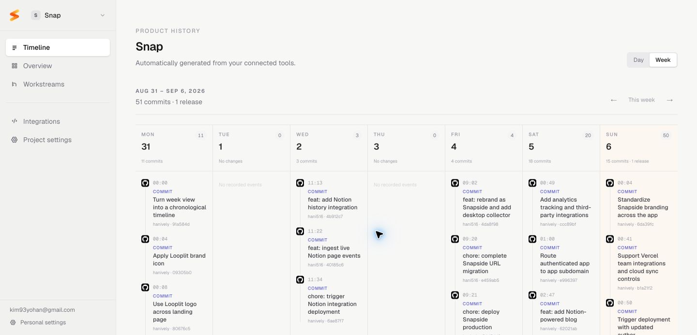
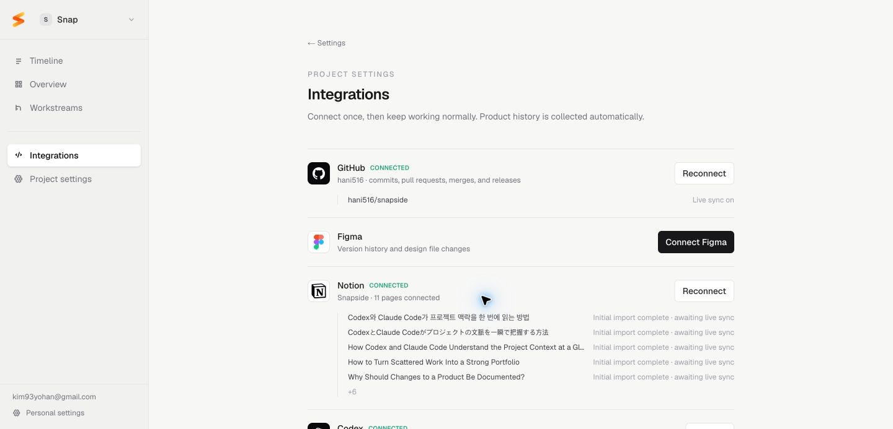
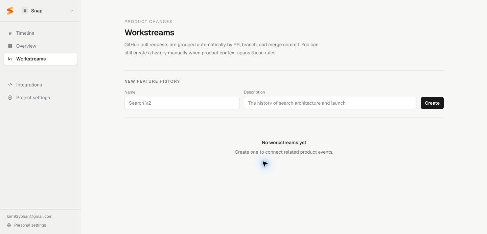

NotionPlan
Product History Platform
普段使うツールを一度接続すると、分散した変更を自動で収集し、時系列とWorkstreamで確認できるProduct History Platformです。

01 / Background
企画、デザイン、コード、データ、配信の記録は各サービスに残ります。しかし、プロダクト全体で何がいつ変わったかを確認するには、それぞれを開き直す必要があります。


02 / Problem
新しい管理作業を追加せず、すでに各ツールで発生している変更からProduct Historyを構成する必要がありました。
計画、画面、コード、配信の履歴が異なるサービスに保存される。
時間が経つと、何を変更したかだけでなく、その判断の背景も失われる。
製品を作る作業とは別に、日報や作業ログを書く負担が生まれる。
完成画面だけでは、問題解決の過程と個人のContributionを説明しにくい。
AI Coding Toolが複数サービスの最新状態を一度に参照できない。
Design questionどうすれば新しい記録行動を求めずに、分散した変更を一つの製品史として残せるか。
03 / Competitive Landscape
公式ドキュメントを基に、各サービスの基本単位とユーザーが更新する情報を比較しました。3サービスは計画した仕事の進行を管理し、Snapsideは制作ツールで実際に発生した変更を収集します。
調査範囲 · 公式プロダクトページ / ヘルプドキュメント
ユーザーがTaskとStatusを入力・更新する。
Notion、Figma、GitHub、Vercelで発生した変更を収集し、時間順にまとめる。
Task管理のレイヤーは追加しませんでした。Snapsideは各Sourceですでに発生した変更を起点に、プロダクト単位の流れを再構成します。
04 / Design Principles
大量の変更を派手に見せるのではなく、個人が必要な時に経緯を読み直せる静かなインターフェースを基準にしました。
プロジェクトに一度接続すると、その後の変更を自動で収集する。
各イベントから元ページ、File、Commit、Deploymentへ戻れる。
異なる形式の変更を、時間を共通軸として読み直す。
チーム報告より、個人の判断・成長・Contributionを中心にする。
多くのイベントを密度高く、優先順位を崩さず表示する。
05 / Information Architecture
Timelineにすべてを詰め込まず、全体状態はOverview、時系列はTimeline、機能単位の流れはWorkstreamsで確認する構造にしました。
06 / Core User Flow
初期設定以降は記録のための操作を要求しません。ユーザーはWeekly TimelineやWorkstreamを読み、必要な時だけ原文に戻ります。
製品単位のContextを作る。
普段使うServiceを選ぶ。
既存の変更を取り込む。
新しいActivityを自動収集。
週・日単位で流れを読む。
機能単位で経緯を追う。
MCPから最新Contextを読む。
07 / System Model
MCPがHistoryを書くのではありません。各Integrationから収集・正規化されたHistoryを、CodexやClaude Codeが読み、プロジェクトのContextとして利用します。
Notion pageFigma fileGit commit / PRVercel deployment Supabase
Supabase Google Drive
Google DriveAI Toolごとに複数Serviceを接続して個別に読み解くのではなく、Snapsideで収集・正規化した同じContextをCodexとClaude Codeから利用します。
Sourceごとに形式と時間軸が異なるため、AI側でプロダクト全体の順序と関係を組み直す必要がある。
ツールをまたぐ変更順序、作業目的、元のSource linkを同じContextとして読み、必要な時だけ原文へ戻れる。
AI Tool側の接続先をSnapside MCPにまとめる。
異なるActivityを時間とWorkstreamで横断して読む。
要約だけで終わらず、元の記録まで確認する。
CodexとClaude Codeが同じProduct Historyを利用する。
08 / Interaction Detail
Notion Activityは更新時刻だけでは判断できません。前回Snapshotと現在の状態を比較し、追加・削除・修正を分けて表示します。
変更量が多い時は要約を先に表示する。
BlockとPropertyの詳細は展開して確認する。
元のNotion Pageへ移動するLinkを保持する。
09 / Key Screens
Overviewでは全体状態、Timelineでは変更の順序、Integrationsでは収集元、Workstreamsでは機能単位のまとまりを確認します。



10 / Design System
Token、Component、Interaction state、Light / Dark modeの仕様を一つのFigma fileに整理しています。
11 / Outcome & Retrospective
定量成果を作らず、現在実装した体験と、次に検証する課題を分けて整理しました。
複数Serviceの変更を一つの時系列で確認する。
各Eventから元の記録へ戻り、Contextを確認する。
異なるToolの変更を機能と作業目的でまとめる。
収集済みHistoryをAI Toolが読み、最新のProject Contextとして使う。
Eventを時系列に並べるだけでは、変更の目的とまとまりは伝わりません。Sourceを保ちながらWorkstreamへ束ねる設計が必要でした。
AIによる変更要約とWorkstream分類を強化しながら、誤分類を直せるControlと、過剰な通知を防ぐ密度設計を検証します。
Scope note — 利用者数、時間削減、満足度などの未検証指標は掲載していません。